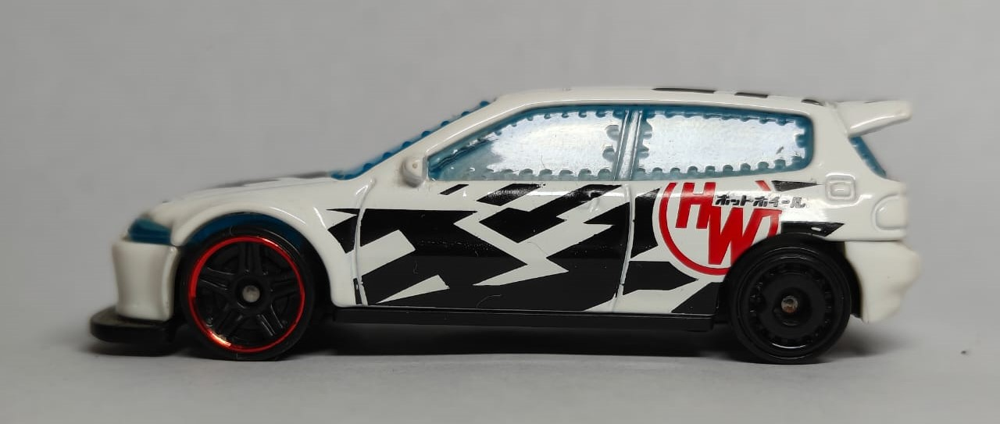

Old Civic
The Old Civic is a reliable and efficient compact car that has become a popular choice for daily commuting and first-time drivers.
Specifications
- Make: Honda
- Model: Civic
- Year: 2005
- Engine: 1.7L I4
- Horsepower: 115 hp
- Top Speed: 120 mph
The Old Civic is a reliable and efficient compact car that has become a popular choice for daily commuting and first-time drivers.